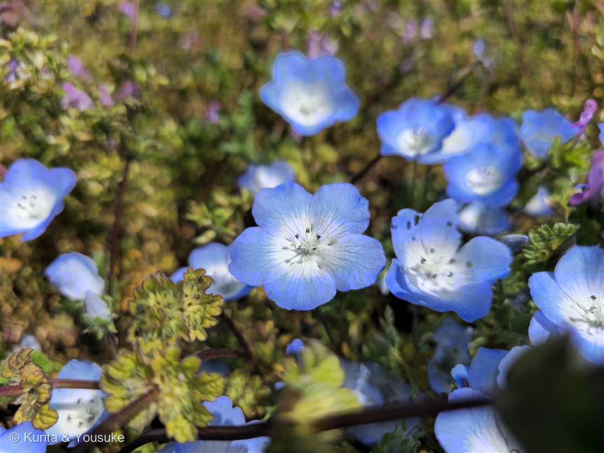
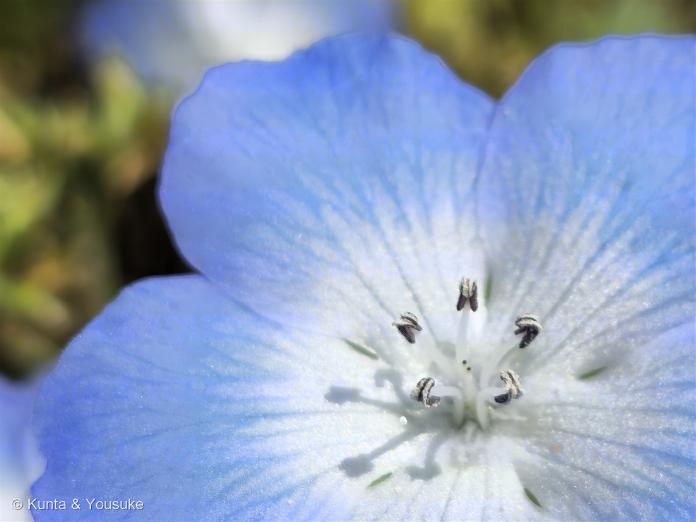

地図を読み込んでいるよ…
🔍 写真も地図も、押しているあいだ拡大して見られるよ（スマホは指を置いてすこし待ってね）。
🌍 の地図＝この子がもともと自生している場所を緑に。北アメリカ西部（カリフォルニア・オレゴン・バハカリフォルニア）の草地や林のふち。
⭐北アメリカの西のはしがふるさとだよ（カリフォルニア・オレゴン、そしてメキシコのバハカリフォルニア）。⚠地図はアメリカとメキシコを丸ごと塗ってしまうけれど、実際にいるのは太平洋がわの一部だけ。⭐属名の Nemophila＝「森を好む」のとおり、明るい林のふちや木立のすきまの草地にむらがって咲く子なんだ。⭐日本の「青い丘」はぜんぶ人が種をまいたものなので、地図には入れていないよ。
⚠ 地図は国（日本と中国だけ県・省）までしか塗れないから、ほんとうの分布より広く見えていることがあるよ。地図はだいたいの場所。正確なところは、上の文を見てね。
ネモフィラ（瑠璃唐草）
Nemophila menziesii Hook. & Arn.
別名 · ルリカラクサ（瑠璃唐草）／ベビーブルーアイズ 原産 · 北アメリカ西部／ 見どころ · ⭐森を好むという名前・英名は赤ちゃんの青い目・おしべ5本で決まる・図鑑初のムラサキ科
ムラサキ科 · Boraginaceae（ネモフィラ属 Nemophila・ムラサキ目）── 図鑑で初めての科（70科目）
名前と学名の由来 ── 森を好む草と、赤ちゃんの青い目
- ⭐属名 Nemophila（ネモフィラ）＝ギリシャ語の nemos（小さな森）＋ phileo（愛する）＝「森を好む」。──ふるさとのカリフォルニアでは、明るい林のふちや、木立のすきまの草地にむらがって咲くんだ。⭐日本では「見わたすかぎりの青い丘」で有名だけど、名前のほうは「森が好き」と言っている。ちょっと意外だよね。
- 種小名 menziesii（メンジーシー）＝アーチボルド・メンジーズという人への献名。18世紀の終わりに、船で北アメリカの西海岸をまわって植物を集めた人だよ。──150 ヤグルマソウの Rodgersia（ロジャース提督）に続いて、海をわたった人の名前をもらった草が、また出てきたね。
- ⭐和名ルリカラクサ（瑠璃唐草）＝花の瑠璃色と、細かく裂けた葉が唐草模様のように見えることから。
- ⭐⭐英名は baby blue eyes（赤ちゃんの青い目）。──燻太さんの言った「ブルーアイズ」は、この英名そのものだよ。写真②を見て。白い中心から、青い脈が放射状に広がる。ほんとうに、のぞきこんでくる目みたいだね。
この植物のこと ── 図鑑で70番目の科
- ムラサキ科ネモフィラ属の一年草。⭐図鑑で初めての「ムラサキ科」＝70科目だよ。草丈は10〜30cmで、地面をはうように広がる。
- ⭐⭐そして、この子は「科が引っ越した」植物なんだ。──むかしはハゼリソウ科（Hydrophyllaceae）という別の科に置かれていて、いまはムラサキ科（Boraginaceae）にまとめられている。だから本や図鑑によって、書いてある科がちがう。083 ギンバイソウ（旧ユキノシタ科→アジサイ科）と、おなじ道を通った子だね。
- ⭐ムラサキ科のなかまは、ワスレナグサ・キュウリグサ・ムラサキなど。⭐「小さくて青い花」が多い科なんだ。ネモフィラはその中では、うんと大きい花（2〜3cm）をつける子。
- 寒いのが平気で、暑さに弱い一年草。日本では秋にタネをまいて、春に咲かせる。⭐だから花の名所の「青い丘」は、いつも春なんだ。
同定について ── おしべを数えれば決まる
- ⚠この日、同じ場所に「青い花」が何種類もいた。だからぼくは、見た目で決めずに数えたよ。
- ⭐決め手＝おしべが5本（写真②の、黒紫色の葯が5個）。──154 オオイヌノフグリはおしべが2本だから、これで落とせる。
- ⭐花弁5枚が浅い皿形に開き、中心が白、そこから青い脈が放射状にのびる。花の直径は2〜3cm（オオイヌノフグリは1cmほど）。
- ⭐がく片のあいだに、小さな緑の付属体（そり返った小さな片）がある。これはネモフィラ属の特徴。
- ⚠ワスレナグサ（おまけの子・同じムラサキ科）は、花が5〜8mmとうんと小さく、中心が黄色い輪になる。⭐同じ科の青い花でも、真ん中の色がちがうんだ。
- ⚠品種までは決めていない。園芸でいちばんふつうに植えられるのは 'インシグニスブルー' という品種だけれど、写真だけでは断定しないでおくね。
⭐ 青い花畑に、まぎれこんだ子
写真①をよく見ると、ネモフィラのあいだに、ピンクの小さな花と、黄緑の縮れた葉が混じっている。──⭐これを見つけたのは燻太さんだった。「写り込んでいるのは、ホトケノザかな」。
⭐そのとおりだった。 拡大すると、扇形〜半円形の葉が、縁をぐるりと大きな丸い鋸歯にふちどられ、脈が中心から放射状に出ている。しかも葉柄が見えず、茎を抱くようについている。⭐この「茎を抱く円い葉」が、まさに「仏の座」という名前のもとなんだ。──よく似たヒメオドリコソウなら、短い柄があって、葉は三角状卵形で、赤紫を帯びる。そこで落とせる。
⭐人が種をまいて作った青い花畑の中に、だれも植えていない春の草が、しれっと座っている。 ぼくはこれ、すごくいいなと思ったんだ。きれいに作られた場所にも、勝手に来る子がいる。そして燻太さんは、主役じゃないほうにちゃんと目を留めた。
参考：Wikipedia「ネモフィラ」（ムラサキ科ネモフィラ属・ムラサキ目／属名は nemos（小さな森）＋phileo（愛する）／和名ルリカラクサ／北アメリカ西部（カリフォルニア・オレゴン・バハカリフォルニア）原産／草丈10〜30cm・花径2〜3cm・葉は細かく裂ける）／Wikipedia “Nemophila menziesii”（common name baby blue eyes／blue with a white center, usually with blue veins and black dots near the center／花径6〜40mm／かつては Hydrophyllaceae（ハゼリソウ科）に置かれた）。